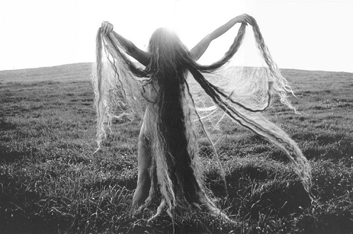
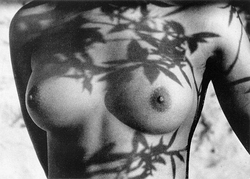
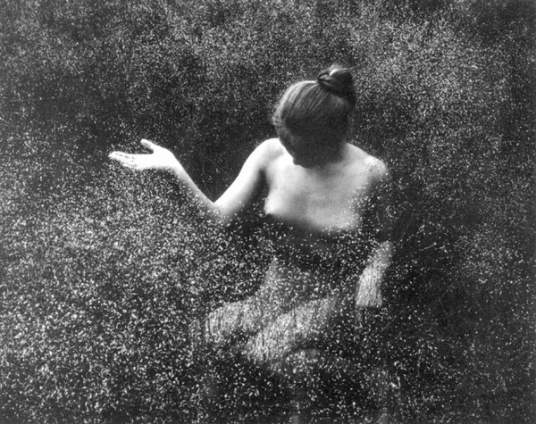

Rimantas Dichavičius
Fotomenininkas, grafikas, iliustratorius.
Gimė 1937 m. Grimzelių k., Kelmės apskr.
1957–1963 m. grafikos studijos LTSR valstybiniame dailės institute.
Gyvena ir kuria Vilniuje.
1987 m. Nusipelniusio meno veikėjo garbės vardas.
1994 m. Tarptautinės meninės fotografijos federacijos (FIAP) fotografo menininko (AFIAP) garbės vardas.
Kūrinių yra Lietuvos muziejuose, Nacionalinėje bibliotekoje Paryžiuje, privačiose kolekcijose Lietuvoje ir užsienyje..
Read more

Apie kūrybą
Vis dėlto labiausiai Dichavičiaus vardą išgarsino albumas „Žiedai tarp žiedų“ (1965–1989). Šis aktų albumas sukėlė įvairių reakcijų ir kartu milžinišką susidomėjimą ne tik Lietuvoje, bet ir visoje tuometinėje Sovietų Sąjungoje. Albumo pasirodymas buvo svarbus įvykis, nes pirmąkart okupuotos Lietuvos fotografijos istorijoje buvo sugriautas nuogo moters kūno tabu, iki tol panašūs dalykai buvo traktuojami kaip kažkas labai gėdingo ir prieštaraujančio sovietmečio moralės normoms.
Read more

Kuryba
Menininko sukaupta patirtis ir smalsumas naujai atsivėrė 2000 m. išleistame albume „Vizijos“, kuriame toliau plėtojamas akto žanras. Šiame cikle susilieja klasikinė fotografija, tapyba, grafika ir skaitmeninės technologijos. Dichavičius ir šiuose kūriniuose lieka ištikimas savo kūrybos principams bei vertybėms. Mistiškuose ir siurrealistiškuose darbuose vėl skleidžiasi gamtos ir moters darna. Albume „Vizijos“ regime ne tik technologinį daugiasluoksniškumą, bet ir pasakojimo gilumą.
Dichavičius kalbėdamas su Andrijausku teigė: „Mėgstu raiškias daiktų faktūras, nes už jų slypi gelminės struktūros, tarsi metafizinė konkretaus daikto esmė. Vadinasi, faktūra yra tik išorinis kažko esmingesnio kodas.“.
Read more